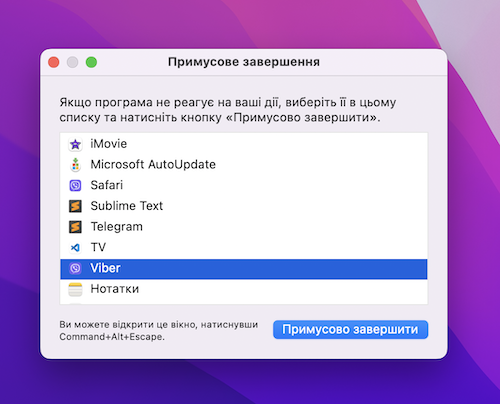

- Крок 1: Натисніть на клавіатурі комбінацію клавіш "Command + Option + Escape"(затисніть три клавіші одночасно).
- Крок 2: З'явиться вікно "Примусове завершення" (Force Quit Applications). У цьому вікні відобразяться всі запущені програми.
- Крок 3: Виберіть програму, яку необхідно закрити та натисніть кнопку "Примусово завершити" (Force Quit).
- Крок 4: Необхідно підтвердити своє рішення в діалоговому вікні "Ви справді хочете примусово завершити програму?". Якщо ви впевнені, що хочете закрити програму, натисніть кнопку "Примусово завершити".

Зверніть увагу! При примусовому закритті програми незбережені дані можуть бути втрачені, тому якщо є можливість збережіть або скопіюйте не збережені дані.
Це все! Програма буде примусово закрита.